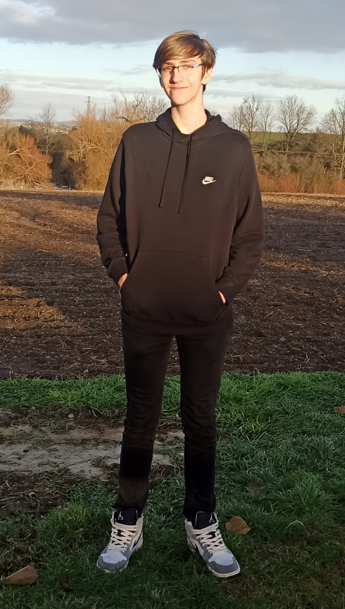

Mimoškolní aktivity
Moje oblíbené mimoškolní aktivity jsou hraní na počítači a jízda na čtyřkolce.
Když mi bylo asi kolem deseti let, tak jsem začal hrát browser hry na našem starém počítači. Potom jsem dostal svůj první telefon, byl to nějaký starý Samsung, ale dokázal spustit nějaké hry, a proto jsem ho spíše používal na hraní her než telefonování. Potom jsem dostal XBOX 360, na kterém jsem hrál závodní hry. Později jsem k tomuto XBOXu dostal volant, abych mohl lépe hrát tyto závodní hry. Za několik let jsem dostal XBOX one a později vlastní počítač. Teď mám počítač s dvěma monitory, volantem a virtuální realitou. Moje oblíbené hry, které momentálně hraju jsou Apex Legends, Fortnite, DiRT Rally 2.0, Euro Truck Simulator 2 a THE FINALS.
Můj táta vždy používal čtyřkolky jak na práci tak na zábavu, a proto také koupil čtyřkolku i mně. Byla to taková malá čtyřkolka, na které jsem nemohl jezdit jen tak bez dozoru, protože jsem na to nebyl dostatečně starý. Poté jsem dostal větší čtyřkolku, na které jsem už mohl jezdit sám. Tato čtyřkolka se po pár letech porouchala a já dostal novou. Teď mám čtyřkolku, kterou dříve používal můj táta, která se jmenuje: a nemohu s ní být více spokojený.
